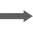
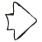

<-- Arrow Generator -->
Arrow type


- 

- 
Arrow configuration
単色
グラデ1
グラデ2
背景色
スケール:回転:
使い方
Arrow-generatorは、矢印のアイコン(PNG画像)を作成するツールです。
Arrow typeから矢印を選択して、Arrow configurationで色を設定してください。
「PNGダウンロード」のボタンをクリックすると、矢印の画像がダウンロードされます。
また、矢印は、SVGデータとしてパソコンに保存して、イラストレーターで編集することもできます。
「SVG出力」をクリックすると、SVGデータを取得できます。
新規にテキストファイルを作成して、SVGデータを保存してください。
※注意：テキストファイルの拡張子は、「svg」にしてください。
Arrow typeから矢印を選択して、Arrow configurationで色を設定してください。
「PNGダウンロード」のボタンをクリックすると、矢印の画像がダウンロードされます。
また、矢印は、SVGデータとしてパソコンに保存して、イラストレーターで編集することもできます。
「SVG出力」をクリックすると、SVGデータを取得できます。
新規にテキストファイルを作成して、SVGデータを保存してください。
※注意：テキストファイルの拡張子は、「svg」にしてください。
ソースコード
copyright (C)2015 simle-arrow.net All rights reserved.